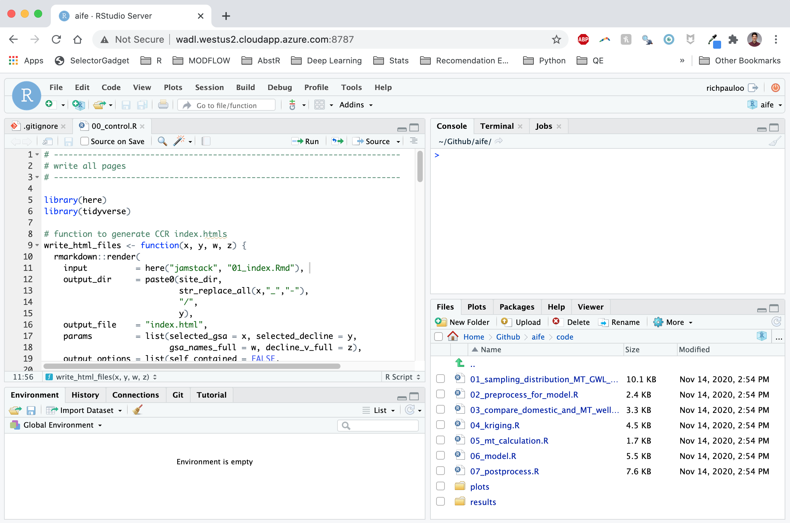
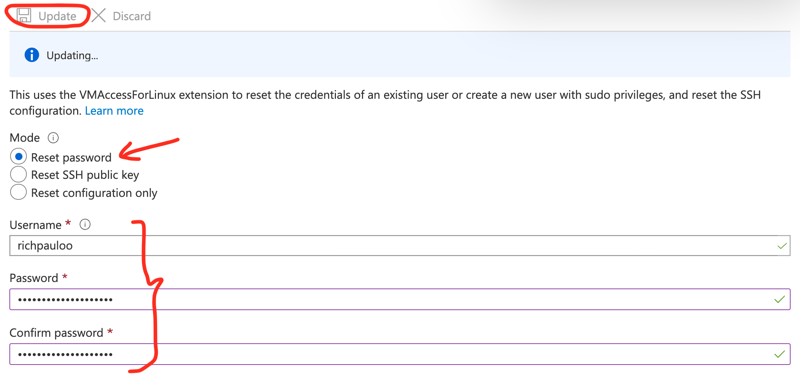
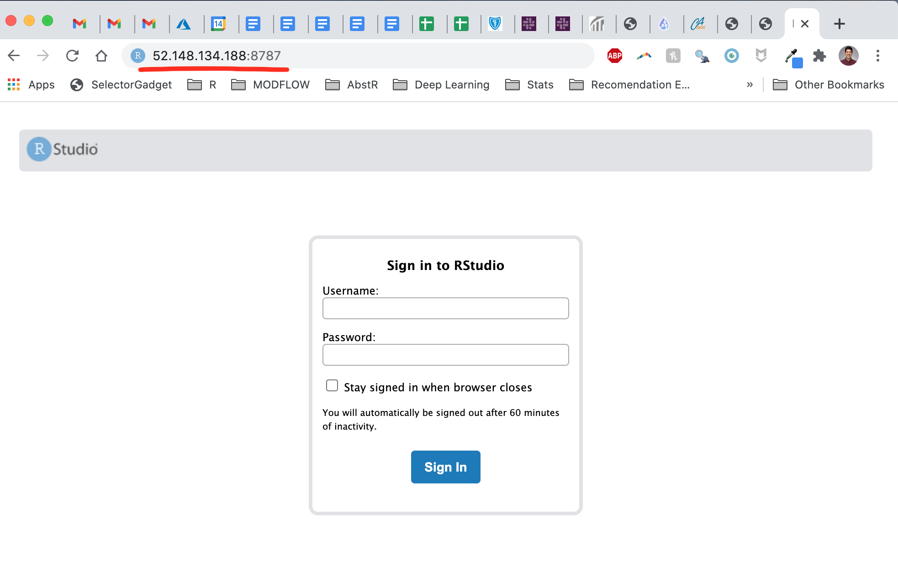
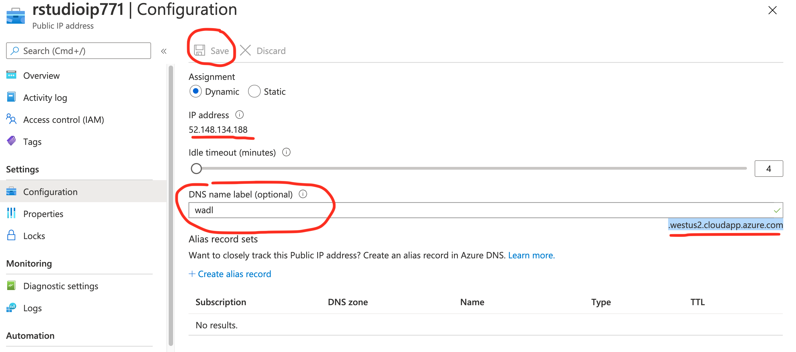
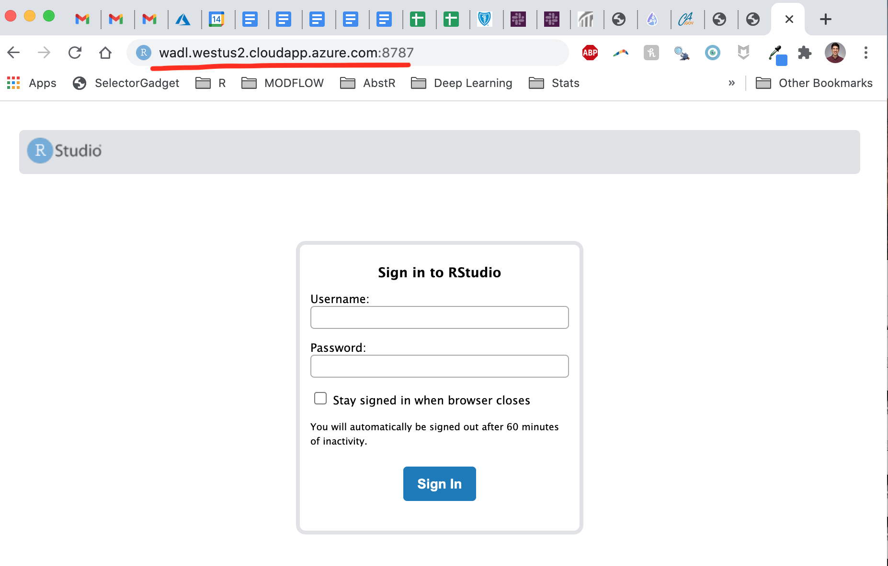

Install RStudio Server on Microsoft Azure
A practical step-by-step guide
By Rich
November 14, 2020

Introduction
Setting up RStudio online is easier than you may think.
I needed to set up an Azure Virtual Machine to create an online development environment, and went through a few different blogs troubleshooting some of the aspects of configuring RStudio Server ( this and this were particularly helpful but also dated, hence this guide).
The setup guide below is my attempt to remember this workflow for the future, but hopefully it will help you sail through the setup.
1. Create the VM
Head to Azure and create a new Ubtuntu 18.04 resource.
Accept default settings. These can be changed later, so don’t worry about these too much.
Download the key pair, which will help you ssh into the VM later.
Allow inbound Network Rules for ports 22, 80, and 443 (SSH, HTTP, and HTTPS respectively).
Example:
Source: Any (default)
Source port range: * (default)
Destination: Any (default)
Destination port ranges: 22
Protocol: TCP
Action: Allow
Priority: 330 (default)
Name: Enable 22 (can be anything you can identify)
Select "Add"
2. ssh into the VM
Download the key pair and move it to ~/.ssh on your computer. You can either mv the file, or use Shift + Cmd + . in your finder to show hidden files, and navigate to ~/.ssh.
The .pem file must be properly protected in order to use it to ssh into the VM. Once you’ve moved the file to ~/.ssh, make it so that only you can read it:
chmod 400 ~/.ssh/username.pem
Now you’re ready to access the VM. In the terminal enter:
ssh -i ~/.ssh/username.pem <username>@<ipaddress>
where the username is what you input in set 1 while setting up the VM, and the ipaddress is the public IP address of the VM.
3. Install R and RStudio Server
Once you’re in, ensure Ubuntu is up to date, upgrade, and install R.
sudo apt-get update
sudo apt-get upgrade
sudo add-apt-repository ppa:marutter/rrutter
sudo apt update
sudo apt-get install r-base
Now it’s time to install Linux libraries that many popular R packages depend on. For example, I rely on gdal for geospatial processing with sf. Below are the libraries that help me get by in daily life:
sudo apt-get install \
# v8
libv8-3.14-dev \
# geospatial libs
libgdal-dev gdal-bin libproj-dev proj-data proj-bin libgeos-dev \
# interactive web graphics
libudunits2-dev \
# igraph
libxml2 libxml2-dev \
# Graphics packages
libcairo2-dev \
# httr
libssl-dev libcurl4-openssl-dev \
# for redirects
apache2
Now it’s time to install RStudio Server. The the most up to date version of RStudio Server can be found here. At the time of writing, for Ubtuntu 18.04, it’s given in line 2 below, but may be different when you read this. Copy and paste the appropriate link:
sudo apt-get install gdebi-core
wget https://download2.rstudio.org/server/bionic/amd64/rstudio-server-1.3.1093-amd64.deb
sudo gdebi rstudio-server-1.3.1093-amd64.deb
Now we need to make sure there’s a port open for RStudio Server. Under the “Networking” tab in the Azure VM dashboard, add an inbound port 8787, which is the default RStudio Server port.
Lastly, you need to add a password for the user to log in (we’ve been doing it with a .pem key file via ssh so far). In the console for the VM, go to Support + Troubleshooting -> reset password, enter a new password and click the “save” button. It will be a new password because you haven’t yet set one.

Now you should be able to navigate to <public IP address>:8787 and login with your username and password.

4. Confgure DNS
It’s nice to navigate to a non-IP address. Go to “Settings -> Configuration” in the VM dashboard and add a DNS alias label.

For instance, I added wadl for
waterdatalab.com, and now the RStudio port is available at wadl.westus2.cloudapp.azure.com:8787.

And that’s it! Time to enjoy RStudio Server.